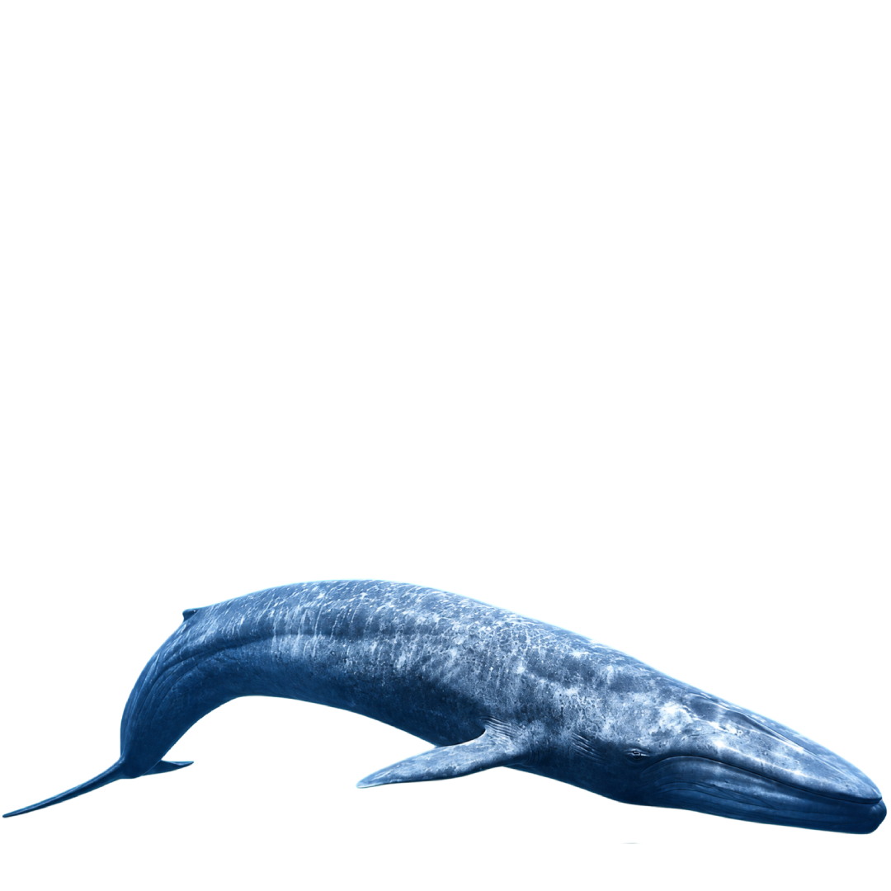
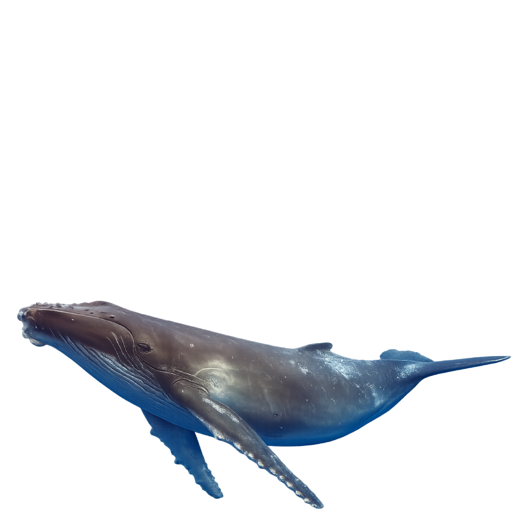
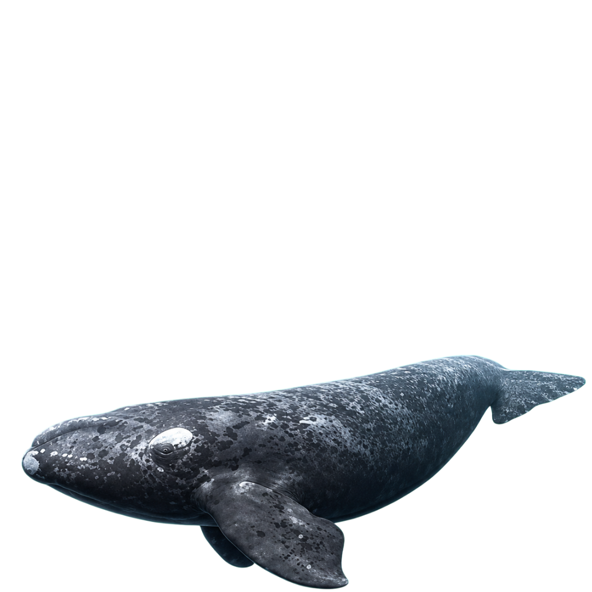
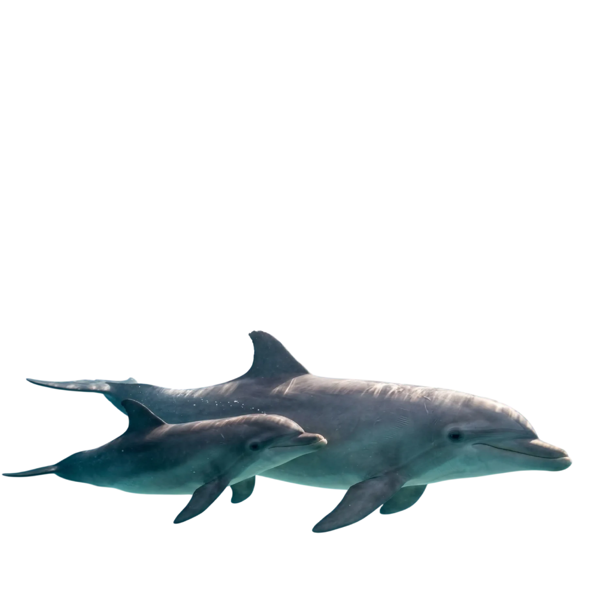
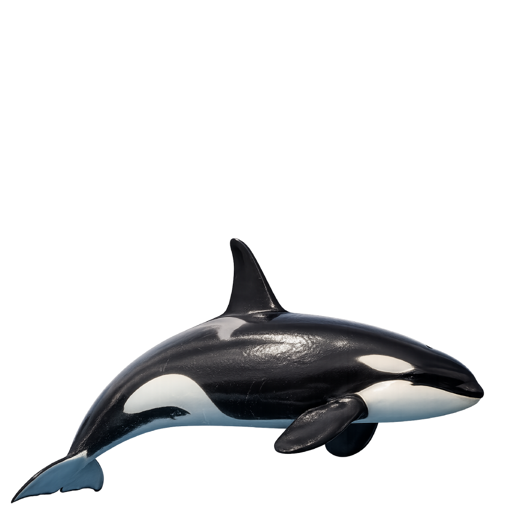
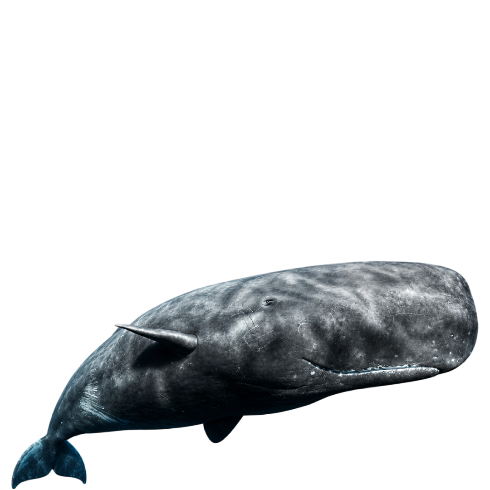
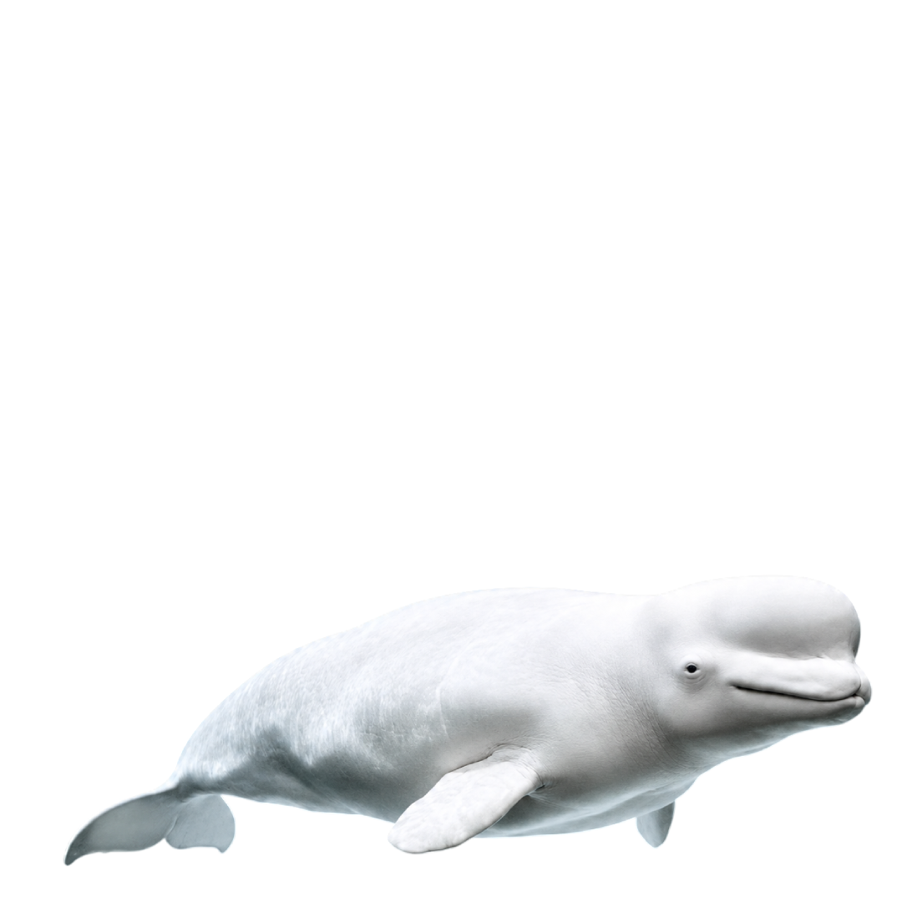

CETÁRIO
Explore o mundo dos principais cetáceos do mundo
ExploreEspécies de Cetáceos

Jubarte
Megaptera novaengliae
Franca do Pacífico
Eubalaena japonica
Nariz de Garrafa
Tursiops truncatus
Orca
Orcinus orca
Cachalote
Physeter macrocephalus
Beluga
Delphinapterus leucasSobre o site
Os cetáceos são animais incríveis e misteriosos e entender mais sobre criaturas tão diversas e versáteis em nosso mundo é um prazer imenso. Esse site foi criado por curiosidade e pesquisa, para desenvolver habilidades e conseguir criar um portfólio demonstrando para o mercado todas as minhas competências. As informações foram compiladas a partir de fontes públicas e têm caráter educacional.